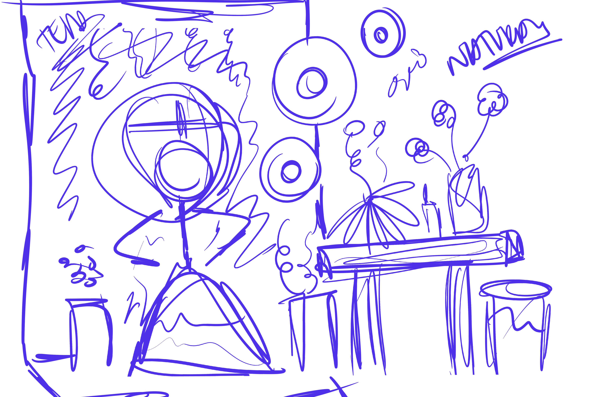
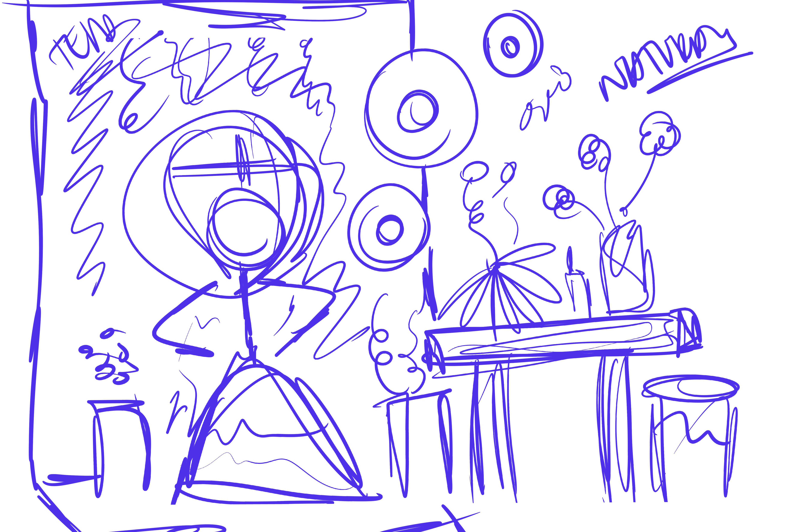
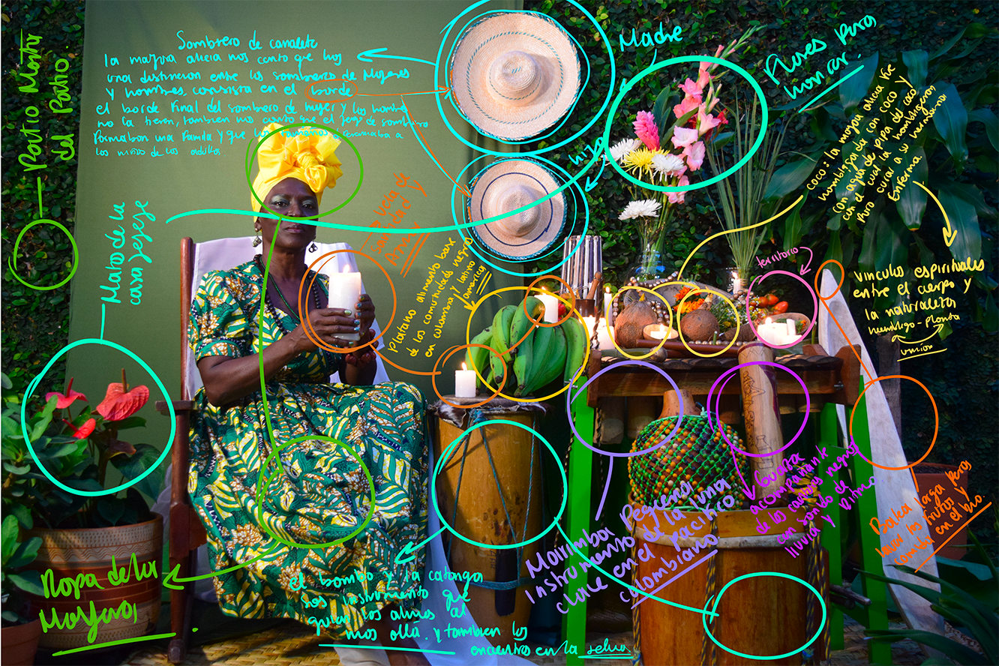
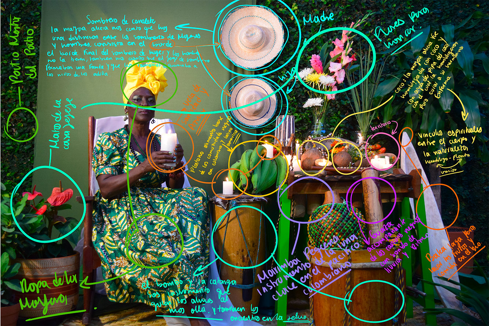

La mayora Alicia, nacida en el municipio de Timbiquí, Cauca, considera que la espiritualidad es un pilar que sostiene a los pueblos negros, ya que permite tener un contacto más cercano con las tradiciones y prácticas espirituales.
Sin embargo, para ella es una dimensión que requiere de mucho respeto. Un ejemplo es el acompañamiento de quien muere en su transición al más allá, donde su alma y espíritu podrán descansar eternamente y serán recordados en la tierra con amor y nostalgia, siendo una labor sumamente importante para la familia, amigas y amigos, pero también para el plano divino, por ello debe honrarse y respetarse.
Para Alicia los alabaos y los arrullos son fundamentales para el traccionar del alma de la persona fallecida.
 

 


MOODBOARD
BOCETO
FOTOGRAFÍA
DESCRIPCIÓN
AUREOLA
INTERVENCIÓN
Alicia conecta notablemente con el color verde, tanto así que el piso, la puerta principal y las paredes de su hogar son de color verde. Incluso el vestido que lleva en la fotografía es verde, siendo este su color favorito y el color de la naturaleza.
la fotografía pensada para Alicia tiene la presencia de diferentes instrumentos de percusión, como el bombo, el cununo, la marimba y el axatse. Al igual que el bombo, estos instrumentos requieren un proceso ritual particular para tener el sonido deseado.
Por ejemplo, la marimba, en la que el palo de chonta debe cortarse en ciertos periodos lunares para que produzca un sonido puro.
En el altar se utilizaron elementos del espacio original que tiene Alicia en su casa, como la catanga, que es el recuerdo querido de su territorio y alude a la importancia de la comida de mar para la gente negra.
En esta fotografía, se representa el sombrero de una madre y su hija, simbolizando los vínculos emocionales y sagrados entre madres e hijas, como Alicia y su hija Carolina.
Está presente el coco que para Alicia es un fruto importante, ya que la conecta con una historia personal sobre cómo su ombligo fue sembrado en una palma de coco y cómo esa agua de pipa, ayudó a su hermana con el dolor de estómago.
También se tuvo en cuenta el limoncillo, que, según Alicia, en su municipio se da como maleza
Para el desarrollo y creación de la aureola de Alicia se utilizaron los colores verde y naranja, ya que, aparte de ser sus colores favoritos, coincidían con el vestido que llevaba puesto. En su estructura base, la aureola estuvo inspirada en el sagrado corazón de Jesús, ya que cuando Alicia era niña, era fundamental para ella aprenderse las oraciones dirigidas a Cristo y Dios. Esto también se relaciona con la clásica cruz que hace referencia la religión cristiana y católica.
Para la intervención ilustrativa, se tuvo en cuenta el distintivo orgánico de las plantas, destacando su forma y belleza mediante la intervención de las hojas.
También se intervinieron los instrumentos musicales presentes, con destellos luminiscentes para que no pasaran desapercibidos. Además, se consideró importante intervenir el vestido, abanico y joyas de Alicia para resaltar aquellos rasgos futuristas planteados en este proyecto fotográfico.
Alicia cuenta que el bombo es un instrumento sumamente poderoso, sagrado y espiritual, ya que su sonido y ritmo es un medio para llegar a otros planos donde el cuerpo no tiene acceso, pero el alma de la gente negra, sí. Es una sensación intangible que solo puede comprender el corazón de quien reconoce el poder del bombo.
Esta interpretación está relacionada con una experiencia que tuvo, cuando un niño se perdió en la selva. Junto a un grupo de personas y familiares del niño, con agua bendita, velas blancas y un poderoso bombo, iniciaron el viaje en búsqueda del infante perdido, ya que solo con el sonido del bombo, la selva permitió que el niño fuera encontrado.